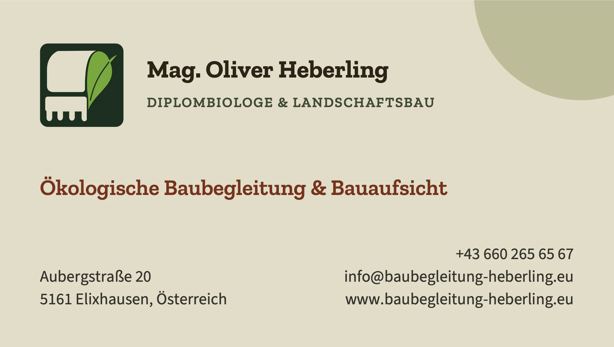
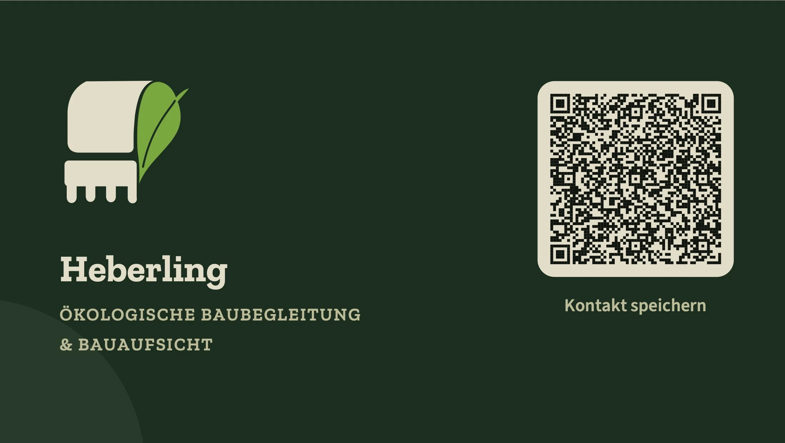

Vorder- und Rückseite
Die Vorschau zeigt die Karte auf naturfarbenem Grund – so ungefähr wirkt sie auf dem Graspapier. Der QR-Code auf der Rückseite speichert deinen Kontakt direkt im Handy. Probier es gerne mit der Handy-Kamera aus.


Das Graspapier ist naturfarben und nicht weiß. Die Baggerschaufel im Logo und die hellen Flächen auf der Rückseite zeigen deshalb den Papierton. Die Farben wirken auf dem Papier etwas gedeckter als am Bildschirm.
So sieht deine Signatur aus
Mit einem Klick auf „Signatur kopieren“ ist sie in der Zwischenablage. Danach fügst du sie in Outlook ein – die Schritte stehen darunter.
Mit freundlichen Grüßen
Oliver Heberling
|
Mag. Oliver Heberling
Diplombiologe & Landschaftsbau
Ökologische Baubegleitung & Bauaufsicht
|
|
|
Aubergstraße 20 · 5161 Elixhausen, Österreich +43 660 265 65 67 · info@baubegleitung-heberling.eu www.baubegleitung-heberling.eu |
|
Neues Outlook & Outlook im Web
- Zahnrad (Einstellungen) öffnen
- Konten › Signaturen › „Neue Signatur“
- Ins leere Feld klicken, Strg + V
- Namen vergeben, als Standard wählen, speichern
Klassisches Outlook (Windows)
- Datei › Optionen › E-Mail
- „Signaturen…“ › „Neu“
- Ins Bearbeitungsfeld klicken, Strg + V
- Bei „Neue Nachrichten“ und „Antworten“ auswählen, OK
Outlook für Mac
- Outlook › Einstellungen › Signaturen
- Auf „+“ klicken
- Ins Feld klicken, Cmd + V
- Unter „Standardsignatur“ zuweisen
Am besten danach eine Test-E-Mail an dich selbst schicken. In der Outlook-App am Handy geht nur eine reine Textsignatur – dort einfach Name, Telefon und E-Mail eintragen.